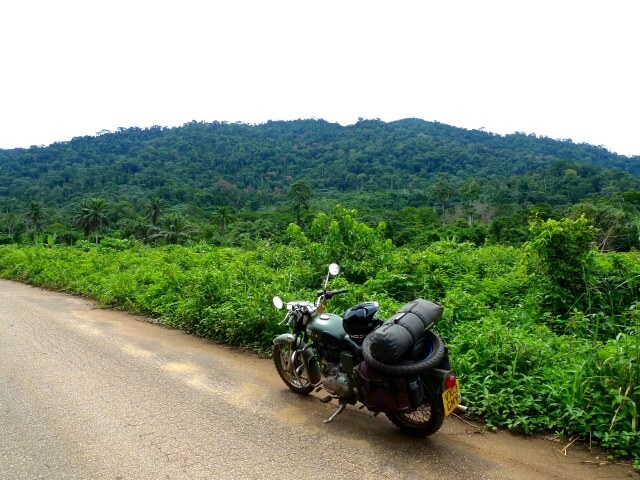

Ghana, AFRICA
Cape Coast Carnage
(14 minute read)
...and the worst resuscitation in history...

The border must be playing on my mind...
I’m up, at 6:30 in the morning, unassisted.
Odd.
That’s got to be some sort of record for me...
Well. Good. Might as well get to it...
Without anyone to say goodbye to at the hotel I get going at the ripe time of 7:30 - surely another record, I’m not usually even awake yet...
It’s not raining. But it’s pretty friggin ominous. Dark. But maybe that’s just the morning...
Some clown reverses over me while I’m filling up petrol at a packed petrol station. Fucking idiot.
But besides that, it’s a clean getaway.
I really can't believe I've made it this far through Nigeria without incident. Just today's ride, and that's it, I've done it.
I'm quickly off the main road, and onto the road that should take me to the border between Nigeria and Cameroon - I think...
Early signs aren't promising...
It’s crappy tarmac full of big, deep potholes full of deep water.
That’s no problem for me on two wheels - easily dodged - but the cars and trucks are having a 'mare of it.
After a while of riding the road is still the same and I’m coming up on my first main village.
There’s a fork in the road, it splits out like a wedge, one heading left, one heading right.
Wasn’t expecting that...
I bury my head in the GPS while still rolling, trying to pick a path...
The left!
Bang, bang!
Woops! Didn’t see that speedbump. Big one too...
There’s yelling coming from my left, I turn my head to see a big bloke taking big, purposeful strides towards me and the bike - just a few meters away. Then he's in my mirrors, he’s running after me! Yelling and waving. That's a plank of wood in his hand with a nail in it! A "stickman"!! My first for Nigeria..
Ha!
Sorry mate, not a chance...
I gun the bike and slowly extend the gap. Not getting mugged today!! See ya!
Down the left of the wedge it’s all new tarmac. Brand spanking new.
I pass some plantations, some wild stuff - canopying over the road overhead, creating a beautiful, dark, green, tunnel.
Gorgeous.
I feel like I’m in nature’s version of a pillow fort; somewhere that feels secret and secure and safe.
The road is forever twisting and turning, or going up or down, conforming to the hilly terrain, with the peaks of the hills shrouded in fast moving cloud, getting whisked along with me to Cameroon.
It’s a beautiful ride.
Bliss.
Then I pass a dirty big industrial plant or a mine or something. It couldn't be which couldn’t be more out keeping with the vibe of the place.
On the other side of the man-made-shit the tarmac road disappears into red dirt track.
Figures.
Things slow down, but besides the occasional puddle it’s actually not too bad.
What was left of the traffic - if you could call it that - evaporates. All that’s left is me and the occasional small roadside village.
I'll be buggered if I know what they do for a crust out here, this remote...
As I ponder it I nearly hit a spike strip.
Stickman!
It's a very agricultural looking spike strip - planks of wood connected together with rope. The spikes are rusty nails...
Fuck!
Gotta be a stickman.
Fuck fuck fuck. The spikes cover up the whole of the road. There’s no way around.
I have to stop.
Shit shit shit shit shit...
A bloke materialises from out of the green somewhere.
Rough lookin...
Fuck!
What do I do??
He graps the rope and moves the spike strip away...
“Where are you going?”
“Um, the border? The border.”
He waves me on.
I ride through.
That was unexpected...
Weird, even.
He didn’t even ask me for my papers...
Come to think of it, I haven’t been asked for my papers once in all of Nigeria. Not once. How about that? In fact, that’s gotta be a first for any country I’ve been to. Go figure.
On the other side of the spikes the red dirt paths turn into steep slopes of really thick, really slippery, red mud.
You can see where all the cars and bikes have had a go at it - deep tyre tracks gouged out of the red clay.
The gentle, thin rain, has given it all the traction of a bar of soap.
It’s a goddamn mess.
Progress comes to a stop.
I have to sit for a bit at the bottom of an incline, size it up, pick my favourite track - or the least worst track - and roll the dice.
The level of control I have over where the bike goes and what it does is purely that of light suggestion, gentle persuasion - the bike is its own animal in this shit - and I’ve just got to let it go where it will, and try to keep the thing rubber side down.
Despite my so called “experience” the bike is still all over the shop, jumping from one rut to another - going exactly where I don’t want the bloody thing to go - moving under me, very suddenly, in ways I’m not ready for.
At least twice I should have binned it. It was only by pure luck, not skill, that everything stayed upright.
It's whiteknuckled shit. Fucking exhausting.
Bang on midday, almost to the second, and I roll into the Nigerian border post at a place called Ekang.
Made it.
Already I’m thrilled by my luck at getting an early start this morning; I’m halfway through the day but not close to halfway through what needs to be done to get back to civilisation.
Rocking up here a couple of hours from now would have been a shit outcome...
I don’t know why they’ve bothered to give this place a name – there’s nothing here.
I pull up at a building that looks like it could be something... More promising than the other ramshackle looking constructions; the whole place is deserted.
I jump off the bike and pull my helmet off, and a fat man in his underwear appears from somewhere and tells me that I need to keep going further.
Right...
I ride till I hit a chained and padlocked wooden gate, barring my path to a bridge crossing over a small stream. This must be the place...
Takes me a while to find immigration. It’s just a white washed building with immigration drawn onto it in tiny letters above the door.
There’s two of blokes lazing around in casual dress inside.
They’re friendly enough. But they don't seem to have a very good handle on what needs to be done. It’s pretty obvious that not many people use this border crossing.
It takes a long time to fill in the required books and legers, and I notice that before the guy thwacks my passport he has to wind his stamp forward three days first...
With that done I ask them how I get the gate unlocked. But instead they handball me to some other guy. Buggered if I know what his job is...
We sit down and I hand him my passport, as requested.
He opens a blank notebook to its blank first page(!) and starts taking down my passport details. Painfully slowly. Like watching a six year old write...
Passport Number.
Name.
Surname.
Date of birth.
Place of birth.
Date of Issue.
Date of Expiry.
Issuing Authority...
I’m surprised he’s not going to try to sketch my passport photo…
He turns to me.
"Where have you stayed in Nigeria?" What??
"All over."
"Which hotels?"
"Which hotels?? I don’t remember the names. Why is that important?"
"What dates?"
"Dates? I don’t know. Why do you need to know?"
“I am doing my job.”
He turns to the first page of my passport and starts heavily scrutinising my Benin visa. He spends about ten seconds, carefully reading it before I stop him.
"I'll show you where my Nigerian visa is..." I go to grab the passport.
"No, I want to see this one..." I don’t get it. What’s this bloke on about?
He starts writing down the details of my stay in Benin...
What??
Does he think that because my Benin visa is the first visa in my passport that it’s the first place that I’ve visited? Fucking peanut.
“Why is this important for Nigeria?” he ignores me.
“Where did you start?”
“England”
“Where is the stamp?”
“What?? Why? That’s not important. There isn’t one...”
“What’s the first stamp?"
“Ugh. Morocco...”
“Where is the stamp?”
“How am I supposed to know!?”
I turn the pages of the passport while he’s holding it. “See all these countries?” I say, “See all these stamps? If we’re going to match every entry-stamp to every exit-stamp to every visa we’re going to be here all year. I’ve no idea which ones are for which countries. They’re all over the place. And it’s not important. Do you understand? None of this is important to Nigeria. I’ve been all over Africa (liar…) and no one has ever asked me questions like this. No one. Ever.”
He sort of trails off after this. And I think we’re done here. I re-take the initiative. “Do you mind if I see the passport for a second? I just want to see if there’s space for the Cameroon visa...”
Of course there is... The ploy works. He hands me back the passport and I thumb through it, thoughtfully. I mock-brighten up “Ah, yes! There’s room for a stamp right here. Perfect!” I put the passport back into my jacket pocket. The guy looks a little lost. “Thank you so much for your time, you've been a great help and I really appreciate it.” He bewilderdly shakes my hand.
I exit stage left.
Clever...
Walking out of the building I smell food, and that's good enough for me; who knows how far I'll have to go till I find food in Cameroon.
I wolf down some rice with fish and sauce.
Back at the border gate there are a couple of new blokes "PSSST!"ing at me from outside the immigration. I ignore them. As far as I'm concerned, we're done here...
A third guy, an ancient bloke, comes up to me and asks me if I’ve seen customs.
“Yes, yes it’s all done...”
But, the gate is still locked...
No choice, I guess.
They’re sitting outside a locked door with "customs" written on it, but that doesn’t mean that they are customs, if you get me.
“Carnet.”
“No, I have a laissez passer.”
“Give it to me”
“Let’s go inside first.” I figure if he can undo that lock then that’ll make it legit enough for me...
“Why do you want to go inside the office?”
“I’d be more comfortable.”
Sure enough, he has the keys.
Tick.
We all head inside.
They check my LP and hand it back and say that I can go.
As they’re unlocking the gate for me I apologise to them for trying to ignore them and being a douchebag.
I roll over the bridge and over the stream.
Nigeria; In the can.
No one thought I'd make it through with both of my ears still attached...
Cameroon.
Off to a bad start...
The Customs office on the Cameroon side of the river is derelict and deserted.
Not too sure what to do about that...
I carry on up the road a bit and see a uniformed police officer taking a slash into the trees.
I park up the bike.
He walks over and puts his hand out. I shake it - trying not to think that he’s just touched his cock with that hand. I hope he didn’t get piss on it. Or has herpes...
Anyway. That gives you an idea of how important the handshake is here; you really can't not do it...
Anyway he speaks English but it's obvious he prefers French. Cameroon is a weird country. I think that half the people speak English and the other half speak French. It's a bit like Canada, except it's nothing like Canada...
We switch to French.
In his pile-o-shit office he explains (I think...) that he can't issue a LP here, but he does stamp me into the country.
He tells me (I think…) where I can find customs.
It’s in one ear and out the other...
Somewhere further down the track, I suppose.
The whole thing takes longer than it ought to, but in the end I’m lucky to ride into Cameroon with zero paperwork for the bike - he could have easily said to me: "no paperwork, no good, go back.”
Straightaway things are different here.
The road has turned from a mud rush into gorgeous, pebbled, single lane track with green pressed in on all sides. I can reach out in any direction and touch green.
I feel like I'm in a secret again.
The sun’s come out through the thin rain and streaks in beams through the trees.
There’s a magic intimacy to it. I’ve never seen a track like it...
But with intimacy comes remoteness. As time passes, it becomes incresingly obvious that the Cameroonian side of the border is even more sparsely populated than the Nigerian side.
And when I say more sparsely populated, I mean no one at all.
Not a soul. No signs of life. Except for the life of the forest, or is it a jungle now?
Botanical definitions aside, if something goes wrong out here, I’m sort of fucked. No one’s going to come to help. I’m just stuck. And what then?
Not worth thinking about; I'm making good progress.
But I can still feel it pressing on me; the risk.
The pebble path gives way back into a fucking mud rush.
We slow right down to a crawl.
There’s, what, about sixty clicks to go?
Sixty clicks at a touch over walking pace... Wait. How fast could I walk sixty clicks?
Shit... This is reminding me of Mali...
Mud mud mud.
We're sliding all over the place again.
It's the kind of clayish mud that you stick your boot into and you'll lose it up to the shins. Try pulling your foot out and that's all you'll get, a foot; the boot and the socks aren't coming out with you...
Sucky, thick, sticky mud.
It’s knackering.
There are puddles all over the place. I try my best to avoid them - they make a mess. But sometimes there's no getting around them.
Gotta go though.
I come up to one, a lighter shade of the colour mud. It's as long as I can kick a football...
I pick the least shit of the two possible paths and hit it as fast as I dare.
Halfway through and I'm making a mess, and then the bike just fucking disappears on me. Like I rode off a cliff.
The front wheel dives deep into the water and the back one follows it in a moment later. I hold onto the handlebars like a goddamn rodeo cowboy.
"FUCK!!"
The loud bang of the exhaust note turns into a bubbly dribble as it goes under, but we keep going forward - and down.
I wring the throttle. If I lose momentum we're fucked.
I’m almost up to my shins in water, we're making a wake like a boat. Any deeper and it's gonna suck water and we're proper fucked...
Make it make it make it make it. Come on.
The bike rises like Lazarus out of the water and the bubbling dribble turns into a coughing bang again and we’re out the other end, soaking wet.
Jagged one there. Bigtime.
Shit; I hope that didn’t flood into my bags...
More mud sliding, and then I hit another puddle. I spot the big fuck off tree branch in the way after I'm already committed.
Can't avoid it! No stopping, no turning, no avoiding, just go.
Foomp-Whack-Thunk-Crack!!!
Foomp! The stick goes under the front tyre.
Whack! with the sheared off pointy end coming flying through the crashbars of the bike
Thunk! Right into the meaty part of my shin.
Crack! The thick part of the tree branch gets fulcrum-ed in the crash bars and then snaps off like snapping a twig with your thumbs...
I come out the other side dragging half a tree branch with me.
Another few inched and the pointy end would have gone clean through my calf. Impaled. Speared.
Still hurts like hell...
No damage though. Bike's fine too; branch could have gone whack-thunking into anything...
Dead-bike and dead-me are probably mean the same thing right now...
We crack on at a crawl.
Clayish red slippery shit.
I can’t relax for a single moment.
The bike won’t sit still for a second.
Every moment is a chance that the bike could disappear from underneath me and send us for a sprawl in the mud.
Hours...
We've covered twenty odd clicks from the border, and that's taken roughly three hours.
That's no more than a brisk walking pace...
I’ve got maybe twenty more to go before I get off this and onto something more “well healed”.
Tonk!
A clanking. Coming from the bike...
Tonk! Tonk! Tonk! Tonk!...
I can feel it.
Tonk! Tonk!...
No no no no I've killed it...
Tonk!...
It’s defininitely not a good sound.
Tonk!...
Definitely a bad sound.
Tonk!...
Fuck this is going to end badly.
The tonking stops when I kill the switch.
I give the bike a good looking over.
Nothing...
Besides everything being coated in a thick layer of mud there’s nothing obviously out of place. Nor is there anything obviously there that shouldn't be, like a stick through the wheel spokes...
What do I do?
There's no fucking choice, is there?
I start it up again. It’s still there. I go.
I stop. I look. I start. I go.
I stop. I look. I start. I go.
I fret...
It’s worse in first gear. Louder.
Which says what??
I’m not a bloody mechanic...
It feels like it's something inside the engine. Or the gearbox, or whatever.
Do I go faster, or slower?
I can't slow my breathing down. I can't lose the bike here...
I endure the clank for an half an hour. I'm ready to snap.
Then the bike dives into another puddle, and I nearly drown it again...
Out the other side and the clank has disappeared. Gone completely.
"What the fuck!?"
I don't get it...
I spot the first soul I’ve seen out here.
Two souls, in fact. I’ve caught them up. It’s a man and a kid, "two-up" on a plastic Chinese 125cc pile of garbage.
The kid on the back in carrying a shitload of bananas. They look like they’ve just cut the branch off a banana tree and are bringing the whole lot back home.
Can they really have been doing the same road that I’ve been doing?
How is that even possible?
It just so happens that right at that moment that we spot each other from the opposite sides of a massive bog that I get stuck.
While trying to jump up a small incline I've beached the exhaust on the mound of mud to the side, it's taken all of the weight off the back wheel and I'm going nowhere. I can’t move, not forwards, backwards or sideways.
My banana buddies were waiting for me on the other side of the mud heap. They come over to help me out.
I wouldn't have even been a chance to get it out without them.
Pretty friggin lucky.
Outrageously lucky, in fact.
What are the odds? If I wasn’t an atheist I would no doubt be thanking someone upstairs right now.
Even with my new mates, it’s a big effort in the thick mud; It’s a heavy bike, on a steep gradient, and the mud is sucking back every one of our efforts to lift it out of the shit. Not to mention it’s slick enough that your legs sinks into it but thick enough to not get it back out again.
I can feel the Cameroonian jungle mud in between my toes.
It’s a gruelling, exhausting effort to shift the bastard thing, but we get it done.
My banana buddies asks for 500CFA.
Capitalists.
That's a touch over $1.
I don’t have any CFA, yet, so I give him my Naira instead, which I’m sure he can exchange. I give him 1000 of them, which is about seven bucks.
He makes seven times more than he wanted, I get out of a nightmare.
Great deal.
We ride on “ensemble”, and not much further down the way I end up getting beached, again, and him and the kid have to help me out, again, and, it’s hard work.
Again.
I’m covered in mud, head to toe, and sweating like no one’s business.
The bike looks amazing though. Absolutely covered in shit. The real deal! Righteous!
There's never been a better looking motorcycle.
Finally, finally I pop out onto the main road at around three in the afternoon. Filthy, but unscathed.
The main road is tarmac. Crappy, glorious, tarmac.
There’s a unit of Gendarmes here at the crossroads, and I take the risk of asking them where Customs are, even if it reveals me to maybe not have the correct papers...
They point me off up the main road, back in the direction of Nigeria...
I don't want to re-live the going backwards to a borderpost balls-up that happened in Senegal...
Plus, I’m tired, and I’ve no desire to be going in the “wrong” direction.
I ask them if there’s any customs in the village at Mamfe, the village I had my eyes on to spend the night.
There is!
The gendarmes, to their credit, let me go with no questions asked.
After a bit of shitty road and that awful clanking tonking sound coming back I hit beautiful Chinese tarmac.
Flawless, magnificent, Chinese ‘mac.
I could fucking kiss it.
There are loads and loads of checkpoints, but I’m always waved through.
The tonking stops.
I zoom to Manfe, and arrive at about four.
Job: Done.
221km, 1 border crossing, 8.5 hours.
I've earnt sleep.